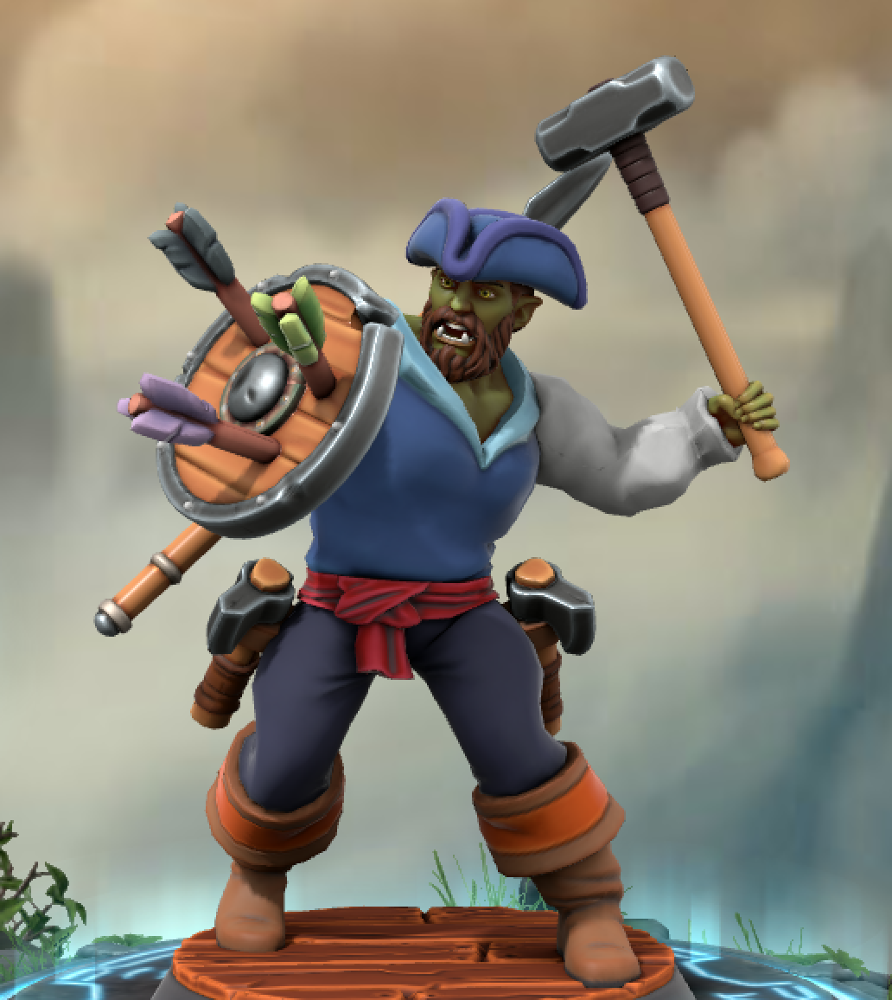

Captain Toofsnaggle is a half-orc seaman that is full of bluster. He has a reputation of mayhem following his every move, yet nobody seems to be able to confirm his claims of his legendary ship or crew.
| current | total | extra | range | |
|---|---|---|---|---|
| exhaustion | 0 | |||
| hp | 102 | 102 | ||
| ac | 15+2 | 17 | ||
| ac with shield | 15+2+2+1 | 20 | ||
| death save success | 0 | 3 | ||
| death save fails | 0 | 3 | ||
| prof | +3 | |||
| hit dice (fighter) | 4 | 6 | d10+4 | |
| to hit (strength) | +3+5 | +8 | ||
| damage (warhammer) | 1d8+5 | |||
| damage (thrown) | 1d6+5+2 | |||
| javelin ammo | 6 | 10 | 30/120 | |
| hand axe ammo | 2 | 2 | ||
| spell attack | +3 +5 | +8 | ||
| spell dc | 8+3+5 | 16 | ||
| initiative | +2 | |||
| attacks | 2 | |||
| walking speed | 30 ft |
| current | total | rest | extra | |
|---|---|---|---|---|
| action surge | 0 | 1 | short | |
| orcish fury | 1 | 1 | short | |
| relentless endurance | 1 | 1 | long | |
| second wind | 1 | 1 | short | 1d10+6 |
| superiority dice | 2 | 5 | short | 1d8 |
Maneuvers
Proficiency in improvised weapons due to tavern brawler feat.
Grappler feat allows pinning a creature grappled. Make another grapple check, and if so both creatures are restrained.
Grapple feat gives advantage on attacking a creature I am grappling.
Tavern brawler grants a d4 for unarmed strikes.
If I hit a target with a with an unarmed strike or improvised weapon on my turn, I can use a bonus action to initiate a grapple with that target. This is granted by the tavern brawler feat.
| ability | check | s | p | cur | bonus | total | spec |
|---|---|---|---|---|---|---|---|
| dex | acrobatics | n | y | 5 | 0 | 5 | |
| wis | animal handling | n | n | 0 | 0 | 0 | |
| int | arcana | n | n | 2 | 0 | 2 | |
| str | athletics | n | y | 8 | 0 | 8 | |
| cha | charisma save | y | n | 2 | 0 | 2 | |
| con | constitution save | y | y | 7 | 0 | 7 | |
| cha | deception | n | n | 2 | 0 | 2 | |
| dex | dexterity save | y | n | 2 | 0 | 2 | |
| int | history | n | n | 2 | 0 | 2 | |
| wis | insight | n | y | 3 | 0 | 3 | |
| int | intelligence save | y | n | 2 | 0 | 2 | |
| cha | intimidation | n | n | 2 | 0 | 2 | |
| int | investigation | n | n | 2 | 0 | 2 | |
| wis | medicine | n | n | 0 | 0 | 0 | |
| int | nature | n | n | 2 | 0 | 2 | |
| wis | perception | n | n | 0 | 0 | 0 | |
| cha | performance | n | n | 2 | 0 | 2 | |
| cha | persuasion | n | n | 2 | 0 | 2 | |
| int | religion | n | n | 2 | 0 | 2 | |
| dex | slight of hand | y | n | 2 | 0 | 2 | |
| dex | stealth | y | n | 2 | 0 | 2 | |
| str | strength save | y | y | 8 | 0 | 8 | |
| wis | survival | n | n | 0 | 0 | 0 | |
| int | tools: cartographer’s | n | y | 5 | 0 | 5 | |
| wis | wisdom save | y | n | 0 | 0 | 0 | |
| int | vehicles: seas | n | y | 5 | 0 | 5 |
Rolled using 4d6k3r<2
Rolls:
15, 15, 11, 16, 14, 17
Half-orc
Mister Creant had these items when I stopped playing her:
| name | rarity | found | attune |
|---|---|---|---|
| Cloak of Fey kind | common | Custom (dmg 158) | ? |
| Headband of Intellect | uncommon | dmg 173 | yes |
| Boots of the Winterlands | uncommon | dmg 156 | yes |
| +1 dagger w/ slight of hand bonus | uncommon | Custom (dmg 213) | no |
| Bag of holding | uncommon | dmg 153 | no |
| Elven chain | rare | dmg 168 | no |
What I would like:
| name | rarity | found | attune |
|---|---|---|---|
| Barrier Tattoo (medium armor) | rare | tcoe 122 | yes |
| Immovable Rod | uncommon | dmg 175 | no |
| Ring of Jumping | uncommon | dmg 191 | yes |
| Sentinel shield | uncommon | dmg 199 | no |
| Horn of Silent Alarm | common | xgte 137 | no |
| Stone of Good Luck (Luckstone) | uncommon | dmg 205 | yes |
Sailor - Pirate
| attr | roll | cost | race | bonus | asi | final | modifier |
|---|---|---|---|---|---|---|---|
| str | 16 | 7 | +2 | +2 | 20 | 5 | |
| dex | 15 | 2 | 15 | 2 | |||
| con | 17 | 9 | +1 | 18 | 4 | ||
| int | 14 | 5 | 14 | 2 | |||
| wis | 11 | 0 | 11 | 0 | |||
| cha | 15 | 4 | 15 | 2 | |||
| 27 | 0 | 0 | nil |
Notes on “stats” table:
bonus covers attribute bonuses from boons and equipment.buy is the point buy attribute score (before any modifications from
race, equipment, boons, etc).cost is the point buy cost.asi is the attribute amount granted from both ability score
improvements/increases (often referred to as “ASI” in the community) and
feats. Since feats are used in place of these increases, and can
themselves provide increases, it makes sense to stuff all of them in the
same column.final is the final attribute after all bonuses and other adjustments
have been factored.modifier is the end modifier to use.| level | roll | class | notes |
|---|---|---|---|
| 1 | 10 | fighter | |
| 2 | 10 | fighter | |
| 3 | 10 | fighter | |
| 4 | 5 | fighter | |
| 5 | 8 | fighter | |
| 6 | 10 | fighter | From 2 to full from Bart’s New Year gift |
| 7 | 8 | fighter | |
| 8 | 9 | fighter | |
| total hp | 102 |
Husky, tall. Snaggletoof is green skinned, wears a sailor’s tunic and breeches. Body has a moderate amount of scars. A metallic tattoo covers his torso with depictions of shields in some places, and the creases where a breast plate would go. His hair is long, bushy, and dark red. He sports a full beard which is also dark red. His orc tusks bow slightly in an outward angle.
He carries a weapon in his left hand, and his shield is on his right. He has a sack of javelins hanging from his back.
I think I like Toofsnaggle best as a battle master. Getting into the fight and getting others to join him as his charismatic leader-self just seems like lots of fun.
Toofsnaggle talks with a cockney accent, and is generally carefree yet rambunctious. He likes fightin’ and winnin’. A good fight doesn’t mean an easy win, and Toofsnaggle wants to make sure he gets into the good fights, and wins’em! He has no sense of fair play, and hates being bored above most anything else. Toofsnaggle is giddy to see things building up to a fight, and will show patience when it comes to planning, ambushes, and the like.
One day Toofsnaggle hopes to best his piratical rival in fame, glory, or just in a (un)fair fight.
Toofsnaggle enjoyed the life of piracy. The harsh and lawless life at sea is one difficult for many, but for Toofsnaggle it was his calling. For him, it had a good deal of adventure, change, and the right amount of hardship. He worked his way up to second mate aboard the Baron’s Pride, a ship whose very name was an insult to the law of the land. The Baron’s Pride sailed under Captain Bludcoin, a ruthless orc and father to Toofsnaggle. Toofsnaggle’s mother, Avarna Ferrysworth, had a knack for curbing the orc’s violent tendencies into something focused and with a smaller death toll.
Avarna passed quite suddenly to a mysterious disease while at sea, and was given a burial at sea.
Bludcoin’s rage became legendary. He stopped attacking trade vessels and instead went straight for naval targets. Each new conquest added to his panoply. The Baron’s Pride grew more fearsome, and her cargo ferried became death itself.
But naval ships didn’t typically have goods that were easy to trade, weren’t rich in food and other supplies. Eventually Bludcoin attacked a trade vessel laden with expensive cargo, the Slender Ox . Once the defenders were dispatched, Bludcoin had the remaining crew and passengers brought to the well deck, and then ordered them executed.
Toofsnaggle argued that there was no sport in this fight, and it made the crew no less than savages. Bludcoin would hear none of his son’s plea, so Toofsnaggle disengaged the immovable rod from the cargo ship’s mast, and threw his javelin of lightning through the main sails of the Baron’s Pride. The Slender Ox had no problem leaving the Baron’s Pride behind. Though other boarders from the Baron’s Pride remained aboard and were steadfastly loyal to their captain. Toofsnaggle had a difficult fight but managed to push many into the drink and dispatch the rest.
Toofsnaggle, an able bodied sailor, took a treacherous path to escape the eventual reprisal of the Baron’s Pride. In some ways the gambit worked. The Slender Ox and… most of the people survived the shipwreck. One of the survivors helped Toofsnaggle secure a position on guard duty for land based caravans, to lay low for a bit and eventually work his way back to seamanship. Toofsnaggle loves the sea, but what he yearns for more is crew loyal whose loyalty is stronger that adamantine.
Right. I understand. Each crew has their own culcha, right? So ’ere’s a right way to work it out. You pick your best in the group, and we has a little competition. Den I see what yer made of and dey seem what I’m made of.
No?
Nobody goes for that nowadays. Real shame dat is. World is goin to kobold shit.
How’s about this:
Turning on your father and surviving a shipwreck is thirsty work. I made me way to a tavern not too far inland - outskirts of Mevren me thinks. I’m not even half way through me sixth tankard and before I know it I’m surrounded by the city watch! I would’a had’em but I suddenly acquired an inner ear infection. Couldn’t keep me balance so they got me in shackles. Some time after they lock me up, one Captain Burdock visits me. Says they recognized me by my handsome description. It feels good to be recognized for your own work! He says there’s this band of folks doing some right secret work for him, and things are developin’ since they’ve been gone. Sends me to go find’em. Says I can have my fings back but keeps my belt of dwarvenkind as collateral! I told him I got all me fings fair and square, and lost the receipts on the shipwreck. I fink he bought it, but he still keeps the belt. I ask him why he picks me and not one of his scrawny armed city watch types. He says they wouldn’t expect me to be workin’ for him. Clever! But who’s them? But he just shushed me. Tells me they were recently spotted near Mevren. I was just at Mevren. Couldn’t left me there!
Along the way there I meet this goliath. She’s got the curves! And she tells a good story too. I says I’m on a secret mission. Ladies are really into mysterious fellas like meself. She said she’s going to this place with wizards who are working on getting closer to dragons or some such, and it’s out near Mevren. So I fink to meself: self, if I were a bunch of lads and ladies looking for a bit of fun, treasure, or a chance to find out where either of them are, that’s where I’d be. So we set out there. I picked up a little coin along the way as a guard for the caravan. It legitimizes the visit, ya see?
From DM:
When Burdock got you out of jail he not only told you about the group, he told you specifically that the leader of the group is a fellow named Sylish. You will know him because he carries the Baron’s Charter for the return of one particular Griffon Rider, named Jerik Beltore. To that fellow you must deliver this message: “G.B. is a gold one” Then, Burdock tells you, “Join Sylish’s crew and aid them in their quest. Let them know that I vouch for you and want you to be with the group as they accomplish their goal.. on account of ‘no one will expect you’ to be a part of the team.. same reason that I hired Sylish in the first place. The fact that the Baron wants Jerik Back and the fact that Jerik is missing is key. Find Jerik and you find the one thing the Baron wants most. You will find Sylish and his crew West of Nevren, at the base of the southern edge of the dragon spine mountains. If Sylish challenges who you are or you need to prove that you spoke to me, tell him the Dancing Goblin has not been the same without him.
Captain Bludcoin is still alive and well, and still sailing the seas on the Baron’s Pride… you know this because when Burdock got you out of jail, its because he knew of your father.. the reputation of his ship, and was confident that the person to stand up to Bludcoin, is someone he could trust. In addition to the dwarven belt, Burdock offers you a choice, he can have a bounty placed upon your fathers head and have the Griffon Riders begin searching for him, or he can have all charges dropped. Your choice, upon completing the mission with Sylish and his crew. Bring back Jerik Beltore to the tavern known as the “dancing goblin” in Bavwren and you can can your own ship chosen from the Baron’s fleet. (recommissioned in whatever name you choose)
| item | g/l | src/dest |
|---|---|---|
| chain mail | gain | starting class equipment |
| greatsword | gain | starting class equipment |
| warhammer | gain | starting class equipment |
| hand axe | gain | starting class equipment |
| hand axe | gain | starting class equipment |
| explorer’s pack | gain | starting class equipment |
| backpack | gain | explorer’s pack |
| bedroll | gain | explorer’s pack |
| mess kit | gain | explorer’s pack |
| tinderbox | gain | explorer’s pack |
| torches x10 | gain | explorer’s pack |
| rations, 10 days | gain | explorer’s pack |
| waterskin | gain | explorer’s pack |
| hempen rope, 50ft | gain | explorer’s pack |
| 10gp | gain | starting background equipment |
| silk rope, 50ft | gain | starting background equipment |
| belaying pin (club) | gain | starting background equipment |
| pouch | gain | starting background equipment |
| 10gp | gain | starting background equipment |
| Elven Lady’s favor/ring | gain | starting background equipment (DM approved) |
| 5gp | loss | Bought ring as trinket (lady elf favor) |
| seaweed key | gain | DM issued item |
| javelin | gain | |
| common clothes | gain | |
| sentinel shield | gain | DM granted starting magic item |
| Barrier Tattoo | gain | DM granted starting magic item |
| Immovable Rod | gain | DM granted starting magic item |
| Horn of Silent Alarm | gain | DM granted starting magic item |
| Stone of Good Luck (Luckstone) | gain | DM granted starting magic item |
| chain mail | loss | Sold at 50% (starting exchange) |
| 37.5gp | gain | Sold chain mail (starting exchange) |
| greatsword | loss | Sold at 50% (starting exchange) |
| 25gp | gain | Sold greatsword (starting exchange) |
| javelins x10 | gain | Bought (starting exchange) |
| 5gp | loss | Bought javelins |
| 200gp | gain | Reward from Burdock |
| 300gp of diamonds | gain | Reward from Burdock |
| +1 enchantment to sentinel shield | gain | DM given from fort |
| navigator’s tools | gain | Purchase at Burdock’s fort |
| 25gp | loss | Purchase of navigator’s tools at Burdock’s fort |
| dragonchess set | gain | Purchase at Burdock’s fort |
| 1gp | loss | Purchase of dragonchess set at Burdock’s fort |
| Long sword of Dragon Bane | gain | Granted by party at fort |
| name | wgt ea | wgt tot | cur | qty | loc. | id |
|---|---|---|---|---|---|---|
| belaying pin (club) | nil | |||||
| silk rope | nil | 50 | ||||
| lucky charm (determine) | nil | |||||
| common clothes | nil | |||||
| pouch | nil | |||||
| handaxe | 2 | 2 | 2 | worn | y | |
| horn of silent alarm | 4 | 4 | ||||
| javelin | 2 | 7 | 10 | |||
| warhammer | 2 | 1 | worn | |||
| sentinel shield +1 | nil | 1 | worn | |||
| navigator’s tools | 1 | stowed | ||||
| dragonchess set | 1 | stowed | ||||
| Long sword of Dragon Bane | 1 | worn | ||||
| nil |
Long sword of Dragon Bane. This exquisite longsword was clearly designed to slay dragons. While delicate in design, resembling elven manufacture, the blade is clearly made of Mithral and is very well balanced. It conveys its purpose to anyone who picks it up, grants them the ability to speak draconic and 3x per day can generate a 10 ft by 10 ft shield that will protect the wielder and any nearby friends from dragon breath. It always functions as a +2 longsword but against any reptile, it does an additional 1d8 force damage and vs dragons that additional damage increases to 3d8.
| amount | total | note |
|---|---|---|
| 10 | 10 | starting amount from background (sailor) |
| 37.5 | 47.5 | Sold starting chain mail at 50% |
| 25 | 72.5 | Sold starting greatsword at 50% |
| -5 | 67.5 | Purchased 10 javelins |
| -5 | 62.5 | Purchased Signet ring (actually lady elf favor) |
| 200 | 262.5 | Partial reward at Burdock’s fort |
| -25 | 237.5 | Purchased navigator’s tools |
| -1 | 236.5 | Purchased dragonchess set |
| -0.01 | 236.49 | Purchased watered down beer in Markantal outskirts |
| -10 | 226.49 | Paid Lowmar to get into Merkantal |
| 226.49 | <- Current. All amounts expressed in gold. |
I am first in Earth, second in Heaven, I appear two times in a week. You can only see me once in a year, although I’m in the middle of sea. Who am I?
The letter E.